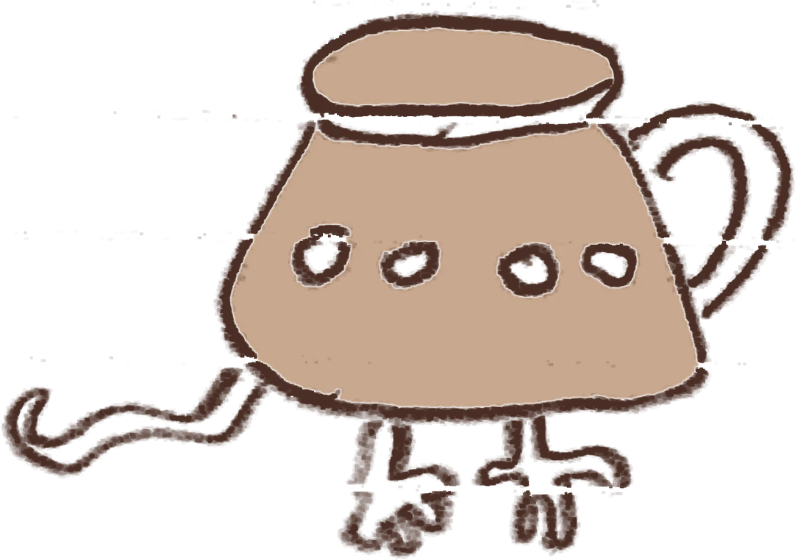
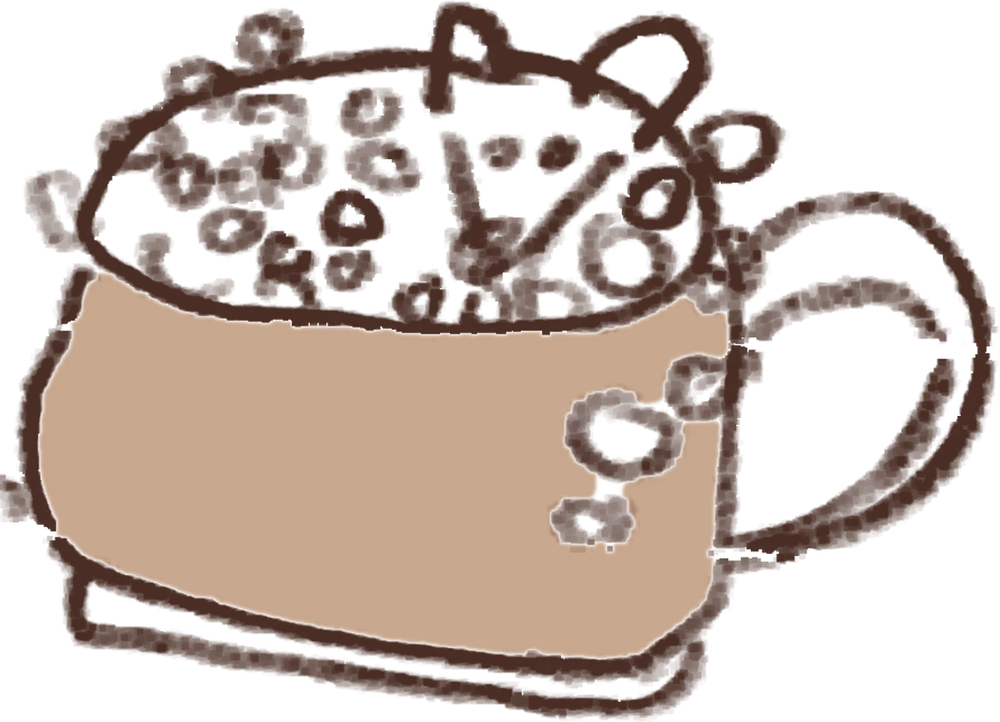
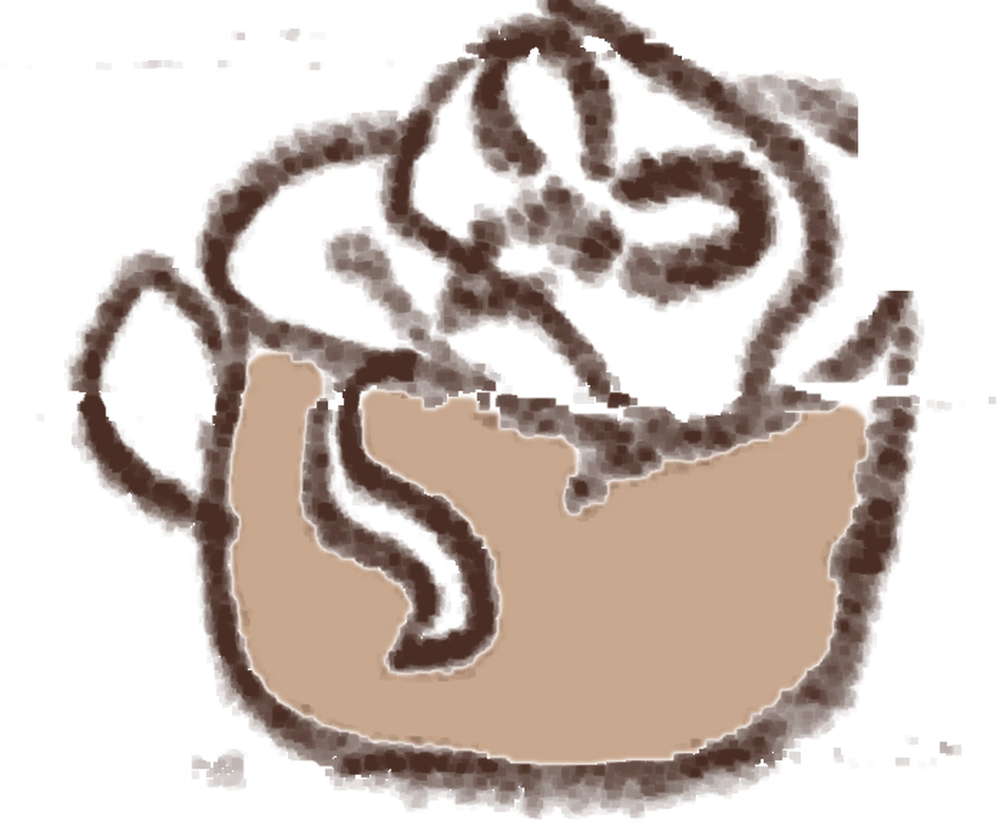
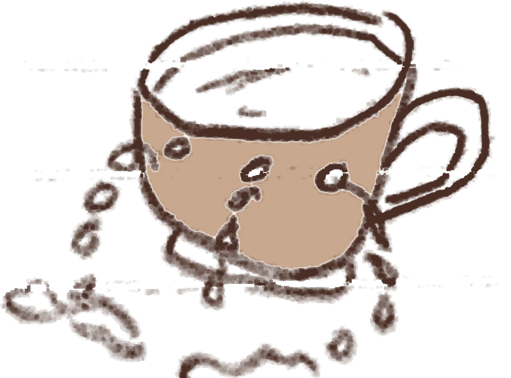

The Doormouse Who Lived in a Teacup
Draft story, written to fill this space. Nana's own version is coming.

The Doormouse did not live in a mouse hole. She lived in a teacup with four blue spots, and she wore its lid like a very good hat. When she wanted to go somewhere, she simply stood up, and off she went: teacup, lid, long curly tail and all.
Every Thursday she gave a tea party. The Bubble Mouse came first, because the Bubble Mouse liked to arrive early and fill her cup with bubbles before anyone could pour the tea. She always brought a candle, so the bubbles would glow.
The Sleepy Mouse came next, already curled up in a mug, already dreaming. Nobody minded. A tea party is better with someone snoring softly in the corner.
Last of all came the Leaky Teacup, who was a little embarrassed, because no matter how carefully you poured, the tea dripped out of her and made puddles on the table. But the Doormouse said puddles were the best part. "Without you," she said, "where would the sugar cubes go swimming?"
So they poured, and they bubbled, and they dripped, and they slept, until the tea went cold, which in Wonderland is exactly when a tea party is supposed to end.


